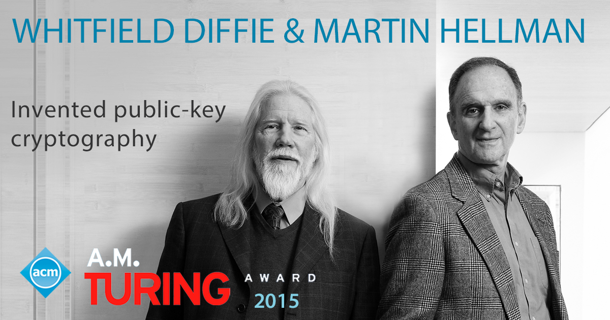
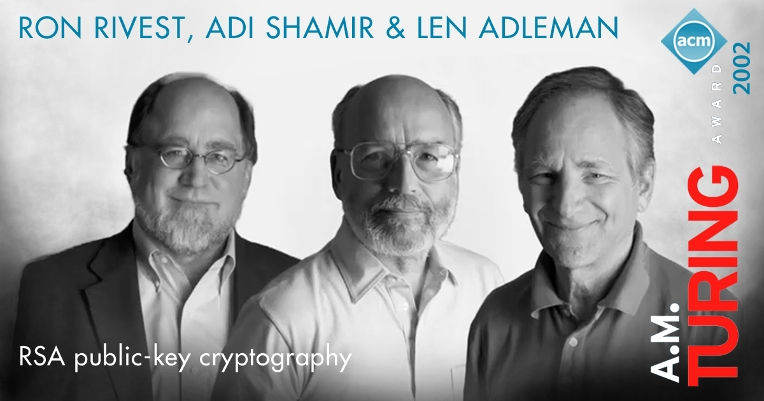
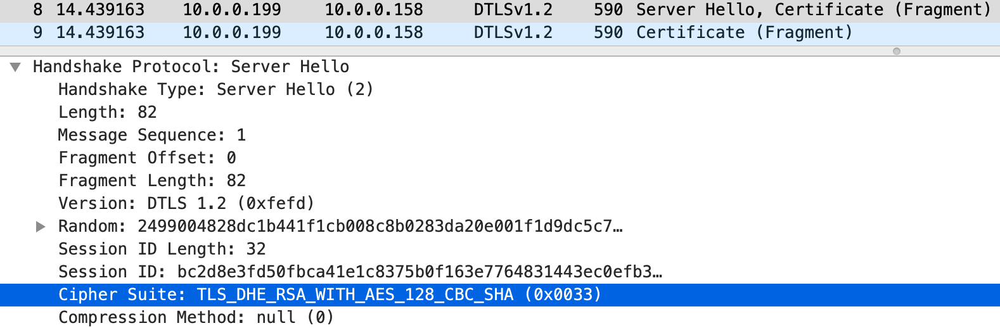
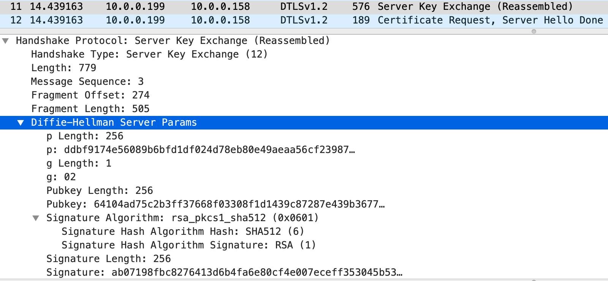
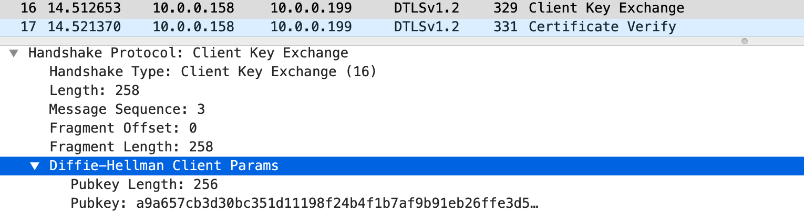

迪菲—赫尔曼密钥交换是使用和RSA相似的技术吗？
近日在一次研发小组内部的 WPA3 技术介绍会上，演讲者提到加密无线开放网络的 OWE 技术基于迪菲—赫尔曼密钥交换，并随口说迪菲—赫尔曼密钥交换是使用和 RSA 相似的技术。这种说法是错误的！虽然迪菲—赫尔曼密钥交换和 RSA 加密算法都属于公钥密码技术，它们的工作机理和应用场景是不同的。作为网络安全相关的研发工程技术人员，有必要清楚地了解两者的工作机制和所基于的数学原理，以及它们之间的区别和联系。
迪菲—赫尔曼密钥交换
迪菲—赫尔曼密钥交换 (Diffie–Hellman key exchange，缩写为DH) 是一种保密通信协议，通过它可以让通信双方在没有任何预知信息的情况下，在不安全的公共信道上交换消息以创建共享密码。这个密码可以用于产生后续双方使用对称加密技术 (如 AES) 通信的密钥。
这种公钥分配以达成共享秘密的思想最早由斯坦福大学教授马丁·赫尔曼 (Martin Hellman) 的博士研究生瑞夫·墨克 (Ralph Merkle) 提出，而后赫尔曼教授的研究助理惠特菲尔德·迪菲 (Whitfield Diffie) 和赫尔曼教授共同发明了实用的密钥交换协议。迪菲与赫尔曼于1976在 IEEE 信息论会刊上受邀共同发表了论文《密码学的新方向》，为公开密钥密码学体制奠基，也正式宣告了迪菲—赫尔曼密钥交换这一新技术的诞生。
迪菲—赫尔曼密钥交换的工作原理，是基于数论中的整数模 n 乘法群及其原根的模幂 (modular exponentiation) 运算。下面以一个简单而具体的例子来描述：
- 爱丽丝选定一个素数 \(p=71\)，再选定整数模 \(p\) 乘法群的一个原根 \(g=7\)
- 爱丽丝选定一个小于 \(p\) 的随机数 \(a=17\)，计算 \(A=g^a\;mod\;p=7^{17}\;mod\;71 = 62\)
- 爱丽丝将 \((p,g,A)\) 一起发给鲍勃
- 鲍勃也选定一个小于 \(p\) 的随机数 \(b=39\)，计算 \(B=g^b\;mod\;p=7^{39}\;mod\;71 = 13\)
- 鲍勃将 \(B\) 发回给爱丽丝
- 爱丽丝计算 \(s=B^a\;mod\;p=13^{17}\;mod\;71 = 42\)
- 鲍勃计算 \(s=A^b\;mod\;p=62^{39}\;mod\;71 = 42\)
计算 \(\color{#93F}{\bf62^{39}\;mod\;71}\) 很麻烦吗？其实很容易……
记住模算数有保持基本运算的性质： \[(a⋅b)\;mod\;m = [(a\;mod\;m)⋅(b\;mod\;m)]\;mod\;m\] 结合平方求幂原理，可以应用从右到左二进制位算法快速计算： \[\begin{align} 62^{39}\;mod\;71 & = (62^{2^0}⋅62^{2^1}⋅62^{2^2}⋅62^{2^5})\;mod\;71\\ & = (62⋅10⋅(62^{2^1}⋅62^{2^1})⋅(62^{2^4}⋅62^{2^4}))\;mod\;71\\ & = (62⋅10⋅(10⋅10)⋅(62^{2^3}⋅62^{2^3}⋅62^{2^4}))\;mod\;71\\ & = (62⋅10⋅29⋅(29⋅29⋅62^{2^3}⋅62^{2^4}))\;mod\;71\\ & = (62⋅10⋅29⋅(60⋅60⋅62^{2^4}))\;mod\;71\\ & = (62⋅10⋅29⋅(50⋅50))\;mod\;71\\ & = (62⋅10⋅29⋅15)\;mod\;71\\ & = 42 \end{align}\]
如同魔法一般，爱丽丝和鲍勃都得到了同样的 \(s\) 值 \(42\)，这就是两个人的共享秘密！此后，爱丽丝和鲍勃就可用 \(s\) 的哈希值作为对称密钥进行加密通讯，第三者无法知晓。
为什么会这样？因为乘法群模幂运算的性质，在模 \(p\) 下 \(g^{ab}\) 和 \(g^{ba}\) 相等：
\[A^b\;mod\;p=g^{ab}\;mod\;p=g^{ba}\;mod\;p=B^a\;mod\;p\]
所以计算出来的 \(s\) 值一定相同。当然，真正的应用中会使用大得多的 \(p\)，否则攻击者可以穷举其所有的余数，去试图破解对称加密的密文。
注意 \((p,g,A,B)\) 是公开的，\((a,b,s)\) 是秘密的。现在假定一个窃听者伊芙可以看到爱丽丝和鲍伯之间的全部消息，那么她可以推导出 \(s\) 吗？答案是只有当 \((p,a,b)\) 值很小时才是实际可能的。伊芙首先必须从她知道的 \((p,g,A,B)\) 倒推出 \((a,b)\) :
- \(A=g^a\;mod\;p\Rightarrow \color{fuchsia}{a = log_g A\;mod\;p}\)
- \(B=g^b\;mod\;p\Rightarrow \color{fuchsia}{b = log_g B\;mod\;p}\)
这就是著名的离散对数问题。这是一个公认的计算难题，当前并没有找到多项式时间效率的算法来计算离散对数。所以只要选择了合适的 \((p,a,b)\)，这个协议被认为是窃听安全的。RFC 3526 推荐了6个大素数的模幂 DH 群可供实际应用，其中最小的素数就有1536比特位！
还要强调的一点是，迪菲－赫尔曼密钥交换本身并不要求通信双方的身份验证，因此它很容易受到中间人攻击。如果攻击者可以在信道的中央窜改两边收发的消息，就可以假扮身份完成两次迪菲－赫尔曼密钥交换。这样攻击者就可以解密全部的信息。因此，通常实际应用中需要加入身份验证机制来防止这类攻击。
迪菲－赫尔曼密钥交换技术是对现代密码学至关重要的贡献。2015年，在这项发明公布39年后，迪菲和赫尔曼共同荣获被誉为“计算机界的诺贝尔奖” 的 ACM 图灵奖。ACM 的颁奖海报上直接称他们“发明了公钥密码技术”。

RSA加密算法
RSA 是一种公钥加密算法，以此为核心技术构成的同名公钥加密系统，被广泛应用于保密数据传输。今天，互联网的全面发展已经在社会的各个层面为大众提供极大便利。不论你是在网上冲浪、游戏、娱乐、购物、还是与亲友即时通讯、管理银行账户、投资买卖金融证券，或者只是简单地收发电子邮件，都有 RSA 在幕后运行保障你的隐私和数据安全。
RSA 实际上是三个人姓氏的缩写，他们是美国密码学家罗纳德·李维斯特 (Ronald Rivest)、以色列密码学家阿迪·沙米尔 (Adi Shamir) 和美国计算机科学家伦纳德·阿德曼 (Leonard Max Adleman) 。1977年，李维斯特、沙米尔和阿德曼三人在麻省理工学院 (MIT) 合作共同发明了 RSA 加密算法。算法最先发布在MIT的公开技术报告里，后来整理发表在1978年二月的 ACM 通讯 杂志，标题为《一种获取数字签名和公钥密码系统的方法》。
RSA 的基本思想是使用者创建由一个公钥和一个私钥组成的密钥对。公钥自由发布，私钥必须秘密保存。任何人都可以用公钥来加密消息，而生成的密文只有私钥持有者才能解读。另一方面，以私钥加密的信息，公钥都可以解开。由于我们假定私钥只是特定对象才能持有，所以使用私钥加密相当于生成数字签名，用公钥解密等效于验证签名。
RSA 加密算法包括四步操作过程：密钥生成、密钥分配、加密和解密。下面也举一个简单而具体的例子来说明：
- 爱丽丝随机选择两个素数 \(p=127\) 和 \(q=5867\)，计算 \(N=pq=745109\)
- 爱丽丝计算 \(N\) 的卡迈克尔函数 \(\lambda(N)=\lambda(745109)=52794\)
- 当 \(p\) 和 \(q\) 都为素数时，通常 \(\lambda(pq)=\mathrm{lcm}(p − 1, q − 1)\)
- \(\mathrm{lcm}\) 是求最小公倍数的函数，可以用欧几里得算法得出
- \(\mathrm{lcm}(126,5866)=52794\)
- 爱丽丝选择一个小于 \(\lambda(N)\) 且与之互素的数 \(e=5\)，并求得 \(e\) 关于 \(\lambda(N)\) 的模逆元 \(d\equiv e^{-1}\pmod {\lambda(N)}\)，得到 \(d=10559\)
- 模逆元的定义是，找到 \(d\) 使得 \((d⋅e)\;\bmod\;\lambda(N)=1\)
- \(d=10559\equiv 5^{-1}\pmod {52794}\)
- \(\pmb{(N,e)}\) 就是爱丽丝的公钥，\(\pmb{(N,d)}\) 是她的私钥
- 爱丽丝将她的公钥 \((745109,5)\) 发给鲍勃
- 爱丽丝密藏她的私钥 \((745109,10559)\)
- 爱丽丝销毁所有 \(p,q,\lambda(N)\) 的记录
- 当鲍勃想给爱丽丝送一个消息 \(M\) 时，先按照双方约定好的编码格式将 \(M\) 转化为一个或多个小于 \(N\) 的正整数 \(m\)，然后使用爱丽丝的公钥逐个计算出密文 \(c\)。计算公式是 \(\pmb{c\equiv m^e\pmod N}\)
- 假定 \(M\) 为“CACC 9678”，编码格式是空格为0、a-z/A-Z（忽略大小写）为1-26、0-9为27-36
- 转化后得到正整数串 “030103 030036 333435”，注意每个都小于745109
- 加密后的密文整数串 “184539 741303 358095”
- \(184539 \equiv 30103^5\pmod {745109}\)
- \(741303 \equiv 30036^5\pmod {745109}\)
- \(358095 \equiv 333435^5\pmod {745109}\)
- 爱丽丝收到密文整数串后，使用自己的私钥逐个计算出明文 \(m\)，计算公式是 \(\pmb{m\equiv c^d\pmod N}\)
- \(30103 \equiv 184539^{10559}\pmod {745109}\)
- \(30036 \equiv 741303^{10559}\pmod {745109}\)
- \(333435 \equiv 358095^{10559}\pmod {745109}\)
以上第三步从 \(\color{#93F}{\bf(d\cdot 5)\;mod\;52794=1}\) 算出 \(d\)，这是怎么做到的？
应用扩展欧几里得算法可以快速求解模逆元。参考该网页，根据互素的前提条件，可以写下关系式 (\(gcd\) 为最大公约数函数)：
\[52794s+5t=\mathrm{gcd}(5, 52794)=1\]
我们要求满足上式的最小正整数 \(t\)。下表演示算法的迭代过程：
| 序号 \(i\) | 商 \(q_{i-1}\) | 余数 \(r_i\) | \(s_i\) | \(t_i\) |
|---|---|---|---|---|
| 0 | \(52794\) | \(1\) | \(0\) | |
| 1 | \(5\) | \(0\) | \(1\) | |
| 2 | \(52794 \div5 = 10558\) | \(4\) | \(1 - 10558\times 0 = 1\) | \(0 - 10558\times 1 = -10558\) |
| 3 | \(5 \div4 = 1\) | \(1\) | \(0-1\times1 = -1\) | \(1 - 1\times (-10558) = \bf10559\) |
只需要两步迭代就得到余数\(1\)，算法结束。最后的 \(t\) 就是我们要的 \(5^{-1}\pmod {52794}\)。
解码后串起来得到同样的信息“CACC 9678”。为什么爱丽丝解密后的消息会与鲍勃发送的完全一致呢？原因就在模幂运算里。首先因为 \(c\equiv m^e\pmod N\)，可以得到 \(c^d\equiv (m^e)^d \equiv m^{ed} \pmod N\)。由于 \((d⋅e)\;mod\;\lambda(N)=1\)，推导出 \(ed = 1 + h\lambda(N)\) (\(h\) 为非负整数）。综合两式
\[\Rightarrow m^{ed} = m^{(1+h\lambda(N))} = \color{fuchsia}{m(m^{\lambda(N)})^h \equiv m(1)^h}\equiv m\pmod N\]
以上倒数第二个同余等式 (符号 \(\equiv\)) 的依据是欧拉定理。这样就证明了解密公式 \({m\equiv c^d\pmod N}\) 的正确性！还可以看到，\(e\) 和 \(d\) 的次序对于 \(m^{ed}\;mod\;N\) 的结果无关，所以爱丽丝用私钥加密的消息，鲍勃可以拿爱丽丝的公钥解开。这也证明了数字签名的可行性。
安全性方面，如果第三方能从爱丽丝的公钥 \((N,e)\) 推算出 \(d\)，那就破解了这一算法。但是破解的前提是先要从 \(N\) 里面分离出 \(p\) 和 \(q\)，这在 \(N\) 很大时是非常困难的。实际上，这就是著名的大数素因数分解问题，另一个公认的计算难题。迄今为止，“已知最好的算法比指数数量级时间要快，比多项式数量级时间要慢”。RSA 大数分解挑战 网站公布的最新纪录，是2020二月破解了 RSA-250，一个829比特的大数。这一进展表明1024比特 \(N\) 值公钥的安全性已经岌岌可危。有鉴于此，美国国家标准技术研究所 (National Institute of Standards and Technology，简写为NIST) 建议实际应用中的 RSA 密钥长度不少于2048比特。
另一方面，虽然公钥不需要保密传送，但却要求可靠地分配。否则，伊芙可以假扮爱丽丝，将自己的公钥发给鲍勃。如果鲍勃信以为真，伊芙就可以拦截所有鲍勃传递给爱丽丝的消息，用她自己的私钥解密。伊芙再将这个消息用爱丽丝的公钥加密后传给她。爱丽丝和鲍勃无法发现这样的中间人攻击。解决这一问题的方案，是建立可信赖的第三方机构签发证书来确保公钥的可靠性。这就是公钥基础架构 (Public Key Infrastructure，缩写 PKI) 的由来。
RSA 公钥加密算法，是三位密码学家和计算机科学家的天才创造。它的发明是公钥密码技术新的里程碑，也成为现代互联网安全通信的基石。李维斯特、沙米尔和阿德曼的杰出贡献，为他们赢得了2002 年的 ACM 图灵奖，比迪菲和赫尔曼早了足足13年！

区别与联系
下表总结了迪菲－赫尔曼密钥交换与 RSA 公钥加密算法的对比：
| 密码技术 | 迪菲－赫尔曼密钥交换 | RSA加密算法 |
|---|---|---|
| 技术类型 | 非对称，公钥技术 | 非对称，公钥技术 |
| 数学原理 | 整数模 \(n\) 乘法群，原根 | 卡迈克尔函数，模逆元，欧拉定理 |
| 数学运算 | 模幂，平方求幂 | 模幂，平方求幂，扩展欧几里得算法 |
| 公开密钥 | \((p,g,A,B)\) | \((N,e)\) |
| 私有密钥 | \((a,b,s)\) | \((N,d)\) |
| 安全保障 | 离散对数难题 | 大数素因数分解难题 |
| 典型应用 | 密钥交换 | 加密/解密，数字签名 |
| 密钥长度 | \(\ge2048\) 比特 | \(\ge2048\) 比特 |
| 身份验证 | 需要外部支持 | 需要 PKI 支持公钥分配 |
| 前向保密 | 支持 | 不支持 |
可以看到，两者都属于非对称的公钥技术，都有一个公钥和私钥密钥对。它们都用到了模幂和平方求幂数学运算，RSA 公钥加密算法还需要应用扩展欧几里得算法求解模逆元。尽管有这些相似点，它们所基于数学原理是不同的，其安全性对应的计算难题也是性质相异的。这些特质决定了迪菲－赫尔曼密钥交换可用于密钥交换，但是不能用来加密/解密；而 RSA 公钥加密算法既可以加密/解密，又能支持数字签名。所以，综合来看二者使用相似的技术的说法不能成立。
基于迪菲-赫尔曼密钥交换演化出来的 ElGamal 加密算法，可以用来加密/解密消息，但是由于一些历史原因以及 RSA 公钥加密算法的巨大商业成功，ElGamal 加密算法并不流行。
在现代密码学中，密钥长度定义为加密算法使用的密钥的比特数。理论上，因为所有的算法都可能会被暴力破解，所以密钥长度确定了一个加密算法的安全性上限。密码分析学研究表明，迪菲-赫尔曼密钥交换和 RSA 公钥加密算法的密钥强度大致相同。破解离散对数和分解大数素因子的计算强度是可比拟的。因此，在实际应用中对这两种密码技术的推荐密钥长度都是至少2048比特。
对于身份验证，迪菲-赫尔曼密钥交换需要外部支持，否则无法抗击中间人攻击。RSA 公钥加密算法虽然可以用于验证数字签名，但前提是有 PKI 支持可靠的公钥分配。当前 PKI 的体系已经相当成熟，有专门的证书认证机构 (Certificate Authority，缩写 CA) 承担公钥体系中公钥合法性检验的责任，发放和管理 X.509 格式的公钥数字证书。
RSA 公钥加密算法在实际应用中存在一个问题，即它没有前向保密的功能。前向保密 (Forward Secrecy)，有时也被称为完全前向保密 (Perfect Forward Secrecy)，是保密通信协议的一种安全属性，指的是长期使用的主密钥泄漏不会导致过去的会话信息泄漏。如果系统具有前向保密性，就可以保护在私钥泄露时历史通信纪录的安全。设想一下这样的情况，虽然伊芙无法破解爱丽丝与鲍勃之间用 RSA 加密的消息，伊芙可以存档全部的过往消息密文。未来某一天，爱丽丝的私钥因为某种原因被泄漏，那么伊芙就可以解密所有的消息记录。
解决这个问题的办法，就是迪菲-赫尔曼密钥交换！记得迪菲-赫尔曼密钥交换的公钥里的 \((A,B)\) 由双方从各自的私钥 \((a,b)\) 生成，那么如果每次会话时都产生随机的 \((a,b)\) 值，未来的密钥泄漏并不会破解之前的会话密钥。这说明迪菲-赫尔曼密钥交换是支持前向保密的！如果我们结合迪菲-赫尔曼密钥交换的前向保密性与 RSA 公钥加密算法的数字签名功能，就可以实现带有身份验证保护的密钥交换。这一过程可以简化示例如下：
- 爱丽丝与鲍勃双方交换经过认证的 RSA 公钥证书
- 爱丽丝与鲍勃各自产生随机的 \((a,b)\) 值，用共享的迪菲-赫尔曼 \((p,g)\) 计算出 \((A,B)\)
- 爱丽丝用自己的 RSA 私钥加密 \(A\) 生成数字签名，将之与 \(A\) 一起发给鲍勃
- 鲍勃用自己的 RSA 私钥加密 \(B\) 生成数字签名，将之与 \(B\) 一起发给爱丽丝
- 爱丽丝用鲍勃的 RSA 公钥验证签名，确认 \(B\) 来自鲍勃，用 \((p,a,B)\) 算出 \(s\)
- 鲍勃用爱丽丝的 RSA 公钥验证签名，确认 \(A\) 来自爱丽丝，用 \((p,b,A)\) 算出 \(s\)
- 爱丽丝和鲍勃达成共享秘密，生成后续对称加密 (AES) 的会话密钥，进行保密通信
这里 RSA 数字签名保障了密钥交换不受中间人攻击。另外以上的第二步中，如果每次会话都产生新的随机数，那么即使有一天爱丽丝或鲍勃的RSA 私钥泄漏，也不会威胁以前会话的安全性，因为窃密者还是必须要去求解离散对数的难题。我们也实现了前向保密。实际上，这就是无处不在的传输层安全性协议 (Transport Layer Security，缩写 TLS) 所定义的 DHE-RSA 密码套件的工作机理。
DHE-RSA加密套件
传输层安全性协议 (TLS) 及其前身安全套接层协议 (Secure Sockets Layer，缩写 SSL) 是一种为互联网通信提供安全及数据完整性保障的安全协议。TLS 广泛使用在浏览器、电子邮件、即时通信、VoIP、虚拟专用网 (VPN) 等应用程序中，已成为事实上的互联网保密通信工业标准。目前 TLS 1.2 是得到普遍支持的协议版本，支持建立于 TCP 之上的安全连接 。针对 UDP 的应用也定义了数据报传输层安全性协议 (Datagram Transport Layer Security，缩写 DTLS)。DTLS 与 TLS 大同小异，主要在可靠性和安全性方面为无连接的 UDP 传输做了一些扩展。DTLS 1.2 与 TLS 1.2 功能相匹配。
TLS 协议采用主从式（客户机/服务器）架构模型。它的工作模式，是使用 X.509 认证和非对称加密算法对通信方做身份认证，之后交换密钥生成对称加密的会话密钥。这个会话密钥就用来加密通信双方交换的数据，保证信息的保密性和可靠性，不必担心被第三方攻击或窃听。为了标识方便，TLS 1.2 协议将使用的身份验证、密钥交换、批量加密和消息认证码算法 组合成密码套件 (Cipher Suite) 名称。每个密码套件被赋予一个双字节的编码。TLS 密码套件注册表提供了全部登记在录的密码套件命名参考表，参考表以编码值从小到大排序。
由于非对称加密算法 (RSA 等) 计算强度远远高于对称加密算法 (AES 等)，从性能上考虑实际应用几乎总是使用对称加密算法批量加密消息。
TLS 1.2 协议支持一系列组合迪菲-赫尔曼密钥交换与 RSA 公钥加密算法的密码套件。它们都以 TLS_DH_RSA 或 TLS_DHE_RSA 作为开头。DHE 中的 “E” 代表 “Ephemeral” (临时的)，其意义是要求每次会话都要产生随机的 \((a,b)\) 值。所以 TLS_DHE_RSA 密码套件能提供前向保密，而 TLS_DH_RSA 不可以，实际应用中应该优先选择前者。
这里以典型的 TLS_DHE_RSA_WITH_AES_128_CBC_SHA (编码 0x00,0x33) 密码套件为例，解析迪菲-赫尔曼与 RSA 协同工作建立 DTLS 会话的过程。首先解释一下密码套件的构成：
- DHE：临时 DH 实现密钥交换
- RSA：签名认证 DHE 的公钥
- AES_128_CBC：128比特密码分组链接模式 AES 加密
- SHA：160比特 HMAC-SHA1 散列消息认证码
参考从网络端口截取的数据包文件 dtls-dhe-rsa.pcap，可得到以下握手协议消息时序图：
sequenceDiagram autonumber participant C as 客户机 (Client) participant S as 服务器 (Server) Note over C,S: 握手协议 rect rgb(230, 250, 255) C->>S: Client Hello (Cr, Cipher Suites)) S-->>C: Hello Verify Request (Cookie) C->>S: Client Hello (Cr, Cookie, Cipher Suites) S-->>C: Server Hello (Sr, Cipher Suite), Certificate (Sn, Se) S-->>C: Server Key Exchange (p,g,A,Ss) S-->>C: Certificate Request, Server Hello Done C->>S: Certificate (Cn, Ce) C->>S: Client Key Exchange (B) C->>S: Certificate Verify (Cs) end Note over C,S: 加密通道建立 rect rgb(239, 252, 202) C->>S: Change Cipher Spec, Encrypted Handshake Message S-->>C: Change Cipher Spec, Encrypted Handshake Message C->>S: Application Data S-->>C: Application Data end
参考时序图中数据包编号解析如下：
- 数据包 \(\require{enclose}\enclose{circle}{1}-\enclose{circle}{3}\) 实现初始握手信息交换：
- 客户机先发出问候消息，消息包含随机数 \(C_r\) 和所支持的密码套件列表
- 服务器回应一个问候验证请求消息，消息包含一个信息块 (Cookie)
- 客户机收到验证请求后重发问候消息，包括上次的全部内容外加复制的信息块
问候验证是 DTLS 特有的，目的是防止拒绝服务攻击。协议规定，服务器只有在收到包含复制的信息块的问候消息后，才会继续为该客户机提供服务。
- 数据包 \(\require{enclose}\enclose{circle}{4}-\enclose{circle}{6}\) 显示服务器进入验证和密钥交换阶段：
- 服务器先发出问候消息回应，消息包含了随机数 \(S_r\) 和所选定的密码套件
- 如下图所示，服务器选择了 TLS_DHE_RSA_WITH_AES_128_CB_SHA
- 同一数据包还包含了服务器证书消息，证书一般较大，会分成多个分片 (fragment)
- 服务器证书提供了可验证其签名的 RSA 公钥 \((S_N,\;S_e)\)
- 接下来服务器发出密钥交换消息，消息包含了其 DH 公钥 \((p,g,A)\) 和签名\(Ss\)
- 下图中 \(p\) 的长度256字节，说明密钥长度为2048比特，\(Pubkey\) 就是 \(A\)
- 图中也可看到签名选用算法是 SHA512 和 RSA，
- 操作是先计算 \(\operatorname{SHA512}(Cr,Sr,p,g,A)\)，再用服务器 RSA 私钥加密
- 之后是服务器发的证书请求消息和问候结束消息
- 服务器请求客户机发送可验证其签名的 RSA 公钥证书
- 服务器先发出问候消息回应，消息包含了随机数 \(S_r\) 和所选定的密码套件
注意：如果是使用 DH-RSA 密码套件，则服务器端的 DH 公钥参数 \((p,g,A)\) 都是不变的，会直接包含在其证书消息中， 这时服务器不会发出密钥交换消息\(\require{enclose}\enclose{circle}{5}\)。对于 DHE-RSA，每次会话的 \(A\) 值都不一样。
- 数据包 \(\require{enclose}\enclose{circle}{7}-\enclose{circle}{9}\) 显示客户机进入验证和密钥交换阶段：
- 客户机先发出证书消息，证书包括 RSA 公钥 \((C_N,\;C_e)\)，也会分成多个分片
- 客户机再发出密钥交换消息，消息包含了其 DH 公钥 \(B\)
- 下图中的\(Pubkey\) 就是 \(B\)
- 客户机最后发出证书验证消息，消息包含了签名 \(Cs\)
- 签名覆盖除最开始的客户机问候 \(\require{enclose}\enclose{circle}{1}\) 及问候验证请求 \(\require{enclose}\enclose{circle}{2}\) 之外的全部过往消息
- 签名操作同样是先计算 SHA512，再用客户机 RSA 私钥加密
- 数据包 \(\require{enclose}\enclose{circle}{10}-\enclose{circle}{11}\) 完成握手并建立加密通道：
- 双方先各自验证对方发过来的签名
- 验证成功后运行 DH 算法生成同样的预备主密钥 (pre_master_secret)
- 双方调用伪随机函数(PRF)从预备主密钥生成48字节主密钥 (master_secret)： \[master\_secret = \operatorname{PRF}(pre\_master\_secret,\unicode{x201C}master\;secret\unicode{x201D},Cr+Sr)[0..47]\]
- 双方再次调用 PRF 从主密钥生成72字节密钥块 (key_block)： \[key\_block = \operatorname{PRF}(master\_secret,\unicode{x201C}key\;expansion\unicode{x201D},Sr+Cr)[0..71]\]
- 密钥块分配给 HMAC-SHA1 和 AES_128_CBC 功能模块：
- 客户机写消息验证码 (MAC) 密钥：20字节
- 服务器写消息验证码 (MAC) 密钥：20字节
- 客户机写加密密钥：16字节
- 服务器写加密密钥：16字节
- 客户机产生更新密码规范 (Change Cipher Spec) 消息，表明开始使用加密和 MAC 模块
- 客户机第三次调用 PRF 生成用于主密钥和握手消息验证的12字节握手结束验证码，验证码打包成握手结束消息，输入到加密和 MAC 模块： \[\operatorname{PRF}(master\_secret,finished\_label,\operatorname{SHA256}(handshake\_messages))[0..11]\]
- 客户机发送更新密码规范消息和加密后的握手结束消息到服务器
- 服务器验证收到的客户机握手结束消息后，重复上面三步，生成自己的更新密码规范消息和加密后的握手结束消息，发送给客户机
- 客户机验证收到的服务器握手结束消息完成握手，加密通道建成
- 数据包 \(\require{enclose}\enclose{circle}{12}-\enclose{circle}{13}\) 显示加密的应用数据交换正式开始
这就是使用 TLS_DHE_RSA_WITH_AES_128_CBC_SHA 密码套件建立安全信息通道的完整过程。DHE 实现了有前向保密保护的密钥交换，而 RSA 数字签名为 DHE 提供了身份验证功能，二者结合打造了一种安全通信的解决方案。清楚了解了这些之后，我们就会更好地掌握迪菲-赫尔曼与 RSA 的工作机理，有效应用于实际工作中并避免不必要的失误。